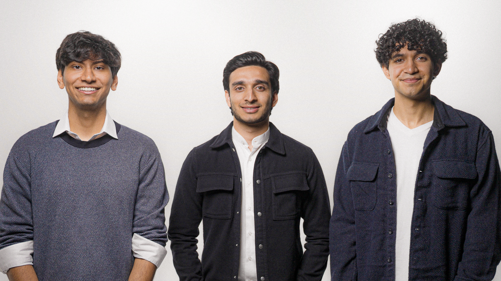

Anuveer Chadha
Founder
Built diamond quantum sensing systems at Berkeley Lab and applied machine learning to biologics at Regeneron.
LinkedIn
Founder
Built diamond quantum sensing systems at Berkeley Lab and applied machine learning to biologics at Regeneron.
LinkedInFounder and CEO
Fifth-generation diamantaire with more than $5M sold across the diamond value chain.
LinkedIn